In [149]: plt.imshow(test>42)
Out[149]: <matplotlib.image.AxesImage at 0x7f572aa2f910>
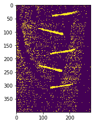
In [150]: plt.imshow(test>43)
Out[150]: <matplotlib.image.AxesImage at 0x7f572a9a60d0>
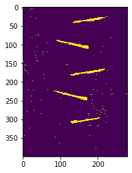
In [151]: plt.imshow(test>44)
Out[151]: <matplotlib.image.AxesImage at 0x7f572a9a1850>
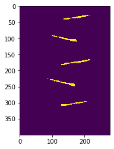
In [152]: plt.imshow(test>45)
Out[152]: <matplotlib.image.AxesImage at 0x7f572a8e0cd0>
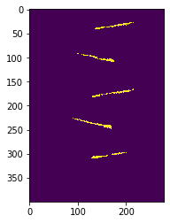
In [153]: plt.imshow(test>44)
Out[153]: <matplotlib.image.AxesImage at 0x7f572a87ce10>
In [154]: thresh = test > 44
In [155]: import skimage.morphology as skmorph
In [156]: thick = skmorph.binary_dilation(thresh, selem=skmorph.disk(8))
In [157]: plt.imshow(thick)
Out[157]: <matplotlib.image.AxesImage at 0x7f572769f690>
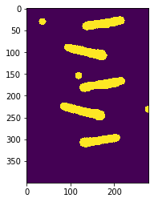
In [158]: thick = skmorph.binary_dilation(thresh, selem=skmorph.disk(5))
In [159]: plt.imshow(thick)
Out[159]: <matplotlib.image.AxesImage at 0x7f57275b1b10>
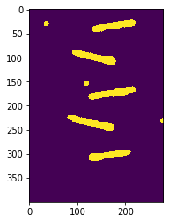
In [160]: masked = np.where(thick, [test, 0])
---------------------------------------------------------------------------
ValueError Traceback (most recent call last)
<ipython-input-160-0747f9e481ea> in <module>
----> 1 masked = np.where(thick, [test, 0])
<__array_function__ internals> in where(*args, **kwargs)
ValueError: either both or neither of x and y should be given
In [161]: masked = np.where(thick, [test, 0.0])
---------------------------------------------------------------------------
ValueError Traceback (most recent call last)
<ipython-input-161-d83e3641df61> in <module>
----> 1 masked = np.where(thick, [test, 0.0])
<__array_function__ internals> in where(*args, **kwargs)
ValueError: either both or neither of x and y should be given
In [162]: masked = np.where(thick, test, 0.0)
In [163]: plt.imshow(masked)
Out[163]: <matplotlib.image.AxesImage at 0x7f572753ef90>
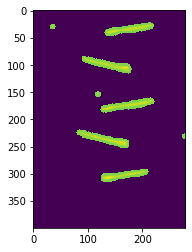
In [164]: plt.imshow(masked, cmap='gray')
Out[164]: <matplotlib.image.AxesImage at 0x7f572750d890>
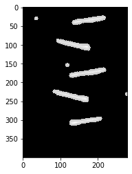
In [165]: masked = np.where(thick, test, 42)
In [166]: plt.imshow(masked, cmap='gray')
Out[166]: <matplotlib.image.AxesImage at 0x7f5727419050>
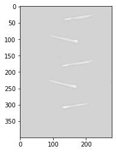
In [167]: masked = np.where(thick, test, 38)
In [168]: plt.imshow(masked, cmap='gray')
Out[168]: <matplotlib.image.AxesImage at 0x7f572737ca50>
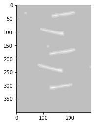
In [169]: masked = np.where(thick, test, 40)
In [170]: plt.imshow(masked, cmap='gray')
Out[170]: <matplotlib.image.AxesImage at 0x7f572734d750>
In [171]: thick = skmorph.binary_dilation(thresh, selem=skmorph.disk(2))
In [172]: masked = np.where(thick, test, 40)
In [173]: plt.imshow(masked, cmap='gray')
Out[173]: <matplotlib.image.AxesImage at 0x7f5727331710>
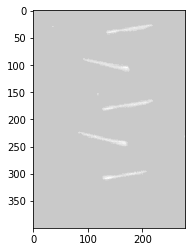
In [174]: masked = np.where(thick, test, 0)
In [175]: plt.imshow(masked, cmap='gray')
Out[175]: <matplotlib.image.AxesImage at 0x7f5727331d50>
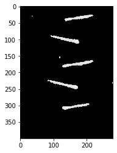
In [176]: test
Out[176]:
array([[41. , 42.6, 42.6, ..., 40.4, 40.4, 41. ],
[41.2, 41.8, 41.8, ..., 40.8, 40.4, 40.6],
[41.2, 40.6, 42.2, ..., 40.4, 40.6, 40.2],
...,
[40.8, 40.8, 41.6, ..., 41.8, 40.8, 40.4],
[41.6, 40.8, 40.8, ..., 41.2, 40.4, 40. ],
[42.6, 40.2, 40.4, ..., 40.2, 40.2, 40. ]])
In [177]: test=test-np.mean(test)+1
In [178]: plt.imshow(test)
Out[178]: <matplotlib.image.AxesImage at 0x7f5727272310>
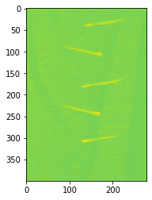
In [179]: plt.imshow(test, cmap='gray')
Out[179]: <matplotlib.image.AxesImage at 0x7f57271db4d0>
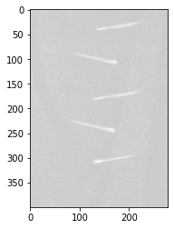
In [180]: test
Out[180]:
array([[ 0.84203393, 2.44203393, 2.44203393, ..., 0.24203393,
0.24203393, 0.84203393],
[ 1.04203393, 1.64203393, 1.64203393, ..., 0.64203393,
0.24203393, 0.44203393],
[ 1.04203393, 0.44203393, 2.04203393, ..., 0.24203393,
0.44203393, 0.04203393],
...,
[ 0.64203393, 0.64203393, 1.44203393, ..., 1.64203393,
0.64203393, 0.24203393],
[ 1.44203393, 0.64203393, 0.64203393, ..., 1.04203393,
0.24203393, -0.15796607],
[ 2.44203393, 0.04203393, 0.24203393, ..., 0.04203393,
0.04203393, -0.15796607]])
In [181]: test[test<0]=0
In [182]: plt.imshow(test, cmap='gray')
Out[182]: <matplotlib.image.AxesImage at 0x7f572713dd50>
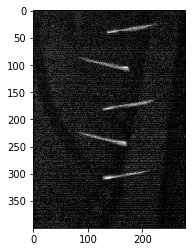
In [183]: test=test-np.mean(test)
In [184]: test[test<0]=0
In [185]: plt.imshow(test, cmap='gray')
Out[185]: <matplotlib.image.AxesImage at 0x7f572712a4d0>
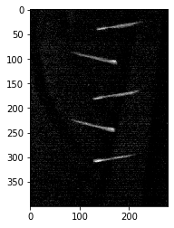
In [186]: plt.imshow(skmorph.opening(test), cmap='gray')
Out[186]: <matplotlib.image.AxesImage at 0x7f5727082e90>
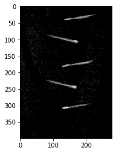
In [187]: t1
Out[187]: 3.0
In [188]: t2
Out[188]: 6.833326500000001
In [189]: t3
Out[189]: 10.9666557
In [190]: t4
Out[190]: 14.499985500000001
In [191]: t5
Out[191]: 17.999982000000003
In [192]: t6
---------------------------------------------------------------------------
NameError Traceback (most recent call last)
<ipython-input-192-76a812db8f26> in <module>
----> 1 t6
NameError: name 't6' is not defined
In [193]: import skimage.io as skio
In [194]: skio.imsave('../../test.png', skmorph.opening(test))
WARNING:imageio:Lossy conversion from float64 to uint8. Range [0.0, 7.837115297417093]. Convert image to uint8 prior to saving to suppress this warning.
In [195]: test
Out[195]:
array([[0. , 1.4371153, 1.4371153, ..., 0. , 0. ,
0. ],
[0.0371153, 0.6371153, 0.6371153, ..., 0. , 0. ,
0. ],
[0.0371153, 0. , 1.0371153, ..., 0. , 0. ,
0. ],
...,
[0. , 0. , 0.4371153, ..., 0.6371153, 0. ,
0. ],
[0.4371153, 0. , 0. , ..., 0.0371153, 0. ,
0. ],
[1.4371153, 0. , 0. , ..., 0. , 0. ,
0. ]])
In [196]: import pandas as pd
In [197]: path = pd.read_csv('/media/hdd/CurrentProjects/team-samara/DropStudy/VideoScripts/Norway Trial Data/n-g03-t03-data.csv')
In [198]: path
Out[198]:
FrameNo Row Column Angle
0 47 11.068670 961.343348 0.031090
1 48 11.399471 961.796296 0.035991
2 49 11.814815 962.530864 0.044679
3 50 12.269474 963.229474 0.054127
4 51 12.990385 963.165865 0.045097
... ... ... ... ...
1605 1652 998.635514 977.732977 -1.032302
1606 1653 1000.984802 980.062310 -1.202398
1607 1654 999.537725 978.195210 -1.110336
1608 1655 1002.612598 981.497638 -1.373991
1609 1656 1001.158093 979.727729 -1.293546
[1610 rows x 4 columns]
In [199]: plt.plot(path['Column'], path['Row'])
Out[199]: [<matplotlib.lines.Line2D at 0x7f57240043d0>]
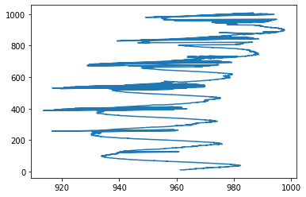
In [200]: import scipy.ndimage.filters as filt
In [201]: plt.plot(filt.gaussian_filter1d(path['Column'], 1), filt.gaussian_filter1d(path['Row'], 1))
Out[201]: [<matplotlib.lines.Line2D at 0x7f5723fecb50>]
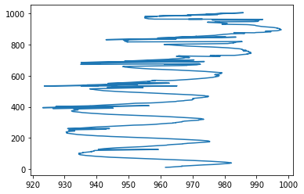
In [202]: plt.plot(filt.gaussian_filter1d(path['Column'], 2), filt.gaussian_filter1d(path['Row'], 2))
Out[202]: [<matplotlib.lines.Line2D at 0x7f5723ee0150>]
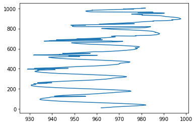
In [203]: plt.plot(filt.gaussian_filter1d(path['Column'], 3), filt.gaussian_filter1d(path['Row'], 3))
Out[203]: [<matplotlib.lines.Line2D at 0x7f5723e6d110>]
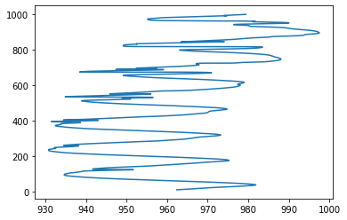
In [204]: plt.imshow(test); plt.plot(filt.gaussian_filter1d(path['Column'], 3)-800, filt.gaussian_filter1d(path['Row'], 3))
Out[204]: [<matplotlib.lines.Line2D at 0x7f5724128650>]
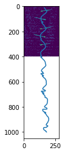
In [205]: plt.imshow(test); plt.plot(filt.gaussian_filter1d(path['Column'], 3)-800, filt.gaussian_filter1d(path['Row'], 3)); plt.ylim((0, 400))
Out[205]: (0, 400)
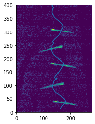
In [206]: plt.imshow(test); plt.plot(filt.gaussian_filter1d(path['Column'], 3)-800, filt.gaussian_filter1d(path['Row'], 3)); plt.ylim((0, 400)); plt.gca().invert_yaxis()
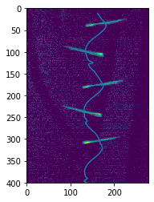
In [207]: plt.imshow(test); plt.plot(filt.gaussian_filter1d(path['Column'], 4)-800, filt.gaussian_filter1d(path['Row'], 4), color=[1,1,1]); plt.ylim((0, 400)); plt.gca().invert_yaxis()
In [208]: plt.imshow(test); plt.plot(filt.gaussian_filter1d(path['Column'], 5)-800, filt.gaussian_filter1d(path['Row'], 5), color=[1,1,1]); plt.ylim((0, 400)); plt.gca().invert_yaxis()
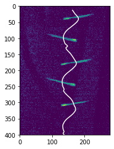
In [209]: col = path['Column'].values
In [210]: row = path['Row'].values
In [211]: plt.plot(col)
Out[211]: [<matplotlib.lines.Line2D at 0x7f5724250150>]
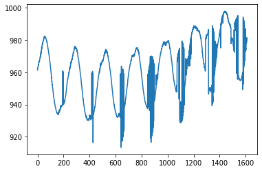
In [212]: plt.plot(row)
Out[212]: [<matplotlib.lines.Line2D at 0x7f57242ab1d0>]
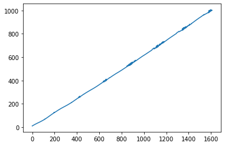
In [213]: plt.plot(col)
Out[213]: [<matplotlib.lines.Line2D at 0x7f57244a9850>]
In [214]: plt.plot(np.diff(col))
Out[214]: [<matplotlib.lines.Line2D at 0x7f5723e26990>]
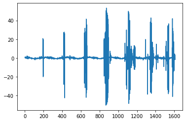
In [215]: np.argwhere(np.abs(np.diff(col))>10)
Out[215]:
array([[ 192],
[ 196],
[ 197],
[ 198],
[ 416],
[ 417],
[ 422],
[ 423],
[ 425],
[ 426],
[ 427],
[ 637],
[ 638],
[ 639],
[ 640],
[ 642],
[ 643],
[ 644],
[ 645],
[ 652],
[ 654],
[ 655],
[ 656],
[ 657],
[ 660],
[ 662],
[ 663],
[ 666],
[ 846],
[ 847],
[ 848],
[ 854],
[ 855],
[ 858],
[ 859],
[ 860],
[ 861],
[ 862],
[ 867],
[ 868],
[ 869],
[ 870],
[ 871],
[ 872],
[ 873],
[ 874],
[ 876],
[ 877],
[ 881],
[ 883],
[ 885],
[ 886],
[ 887],
[ 888],
[ 889],
[ 892],
[ 893],
[ 896],
[ 897],
[ 898],
[1072],
[1087],
[1088],
[1092],
[1093],
[1094],
[1095],
[1096],
[1097],
[1098],
[1104],
[1105],
[1108],
[1109],
[1112],
[1113],
[1114],
[1115],
[1117],
[1122],
[1123],
[1124],
[1127],
[1139],
[1140],
[1169],
[1170],
[1171],
[1177],
[1178],
[1180],
[1181],
[1291],
[1314],
[1341],
[1342],
[1343],
[1344],
[1345],
[1350],
[1354],
[1355],
[1358],
[1365],
[1366],
[1371],
[1407],
[1408],
[1510],
[1511],
[1513],
[1528],
[1529],
[1530],
[1531],
[1532],
[1533],
[1537],
[1539],
[1540],
[1578],
[1580],
[1581],
[1584],
[1585],
[1586],
[1587],
[1588],
[1589],
[1590],
[1591],
[1595],
[1599]])
In [216]: colnan = np.where(np.abs(np.diff(col))>10, col, np.nan)
---------------------------------------------------------------------------
ValueError Traceback (most recent call last)
<ipython-input-216-7fddd58e44fb> in <module>
----> 1 colnan = np.where(np.abs(np.diff(col))>10, col, np.nan)
<__array_function__ internals> in where(*args, **kwargs)
ValueError: operands could not be broadcast together with shapes (1609,) (1610,) ()
In [217]: colnan = np.where(np.abs(np.diff(col))>10, col[:-1], np.nan)
In [218]: plt.plot(colnan)
Out[218]: [<matplotlib.lines.Line2D at 0x7f57244f59d0>]
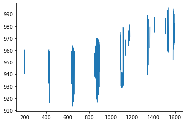
In [219]: colnan = np.where(np.abs(np.diff(col))<10, col[:-1], np.nan)
In [220]: plt.plot(colnan)
Out[220]: [<matplotlib.lines.Line2D at 0x7f572452ac90>]
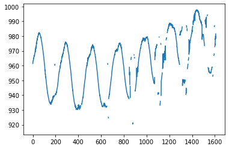
In [221]: colnan = np.where(np.abs(col-filt.gaussian_1dfilter(col, 5))>3, col[:-1], np.nan)
---------------------------------------------------------------------------
AttributeError Traceback (most recent call last)
<ipython-input-221-0915f575b758> in <module>
----> 1 colnan = np.where(np.abs(col-filt.gaussian_1dfilter(col, 5))>3, col[:-1], np.nan)
AttributeError: module 'scipy.ndimage.filters' has no attribute 'gaussian_1dfilter'
In [222]: colnan = np.where(np.abs(col-filt.gaussian_filter1d(col, 5))>3, col[:-1], np.nan)
---------------------------------------------------------------------------
ValueError Traceback (most recent call last)
<ipython-input-222-9afa66c401b2> in <module>
----> 1 colnan = np.where(np.abs(col-filt.gaussian_filter1d(col, 5))>3, col[:-1], np.nan)
<__array_function__ internals> in where(*args, **kwargs)
ValueError: operands could not be broadcast together with shapes (1610,) (1609,) ()
In [223]: colnan = np.where(np.abs(col-filt.gaussian_filter1d(col, 5))>3, col, np.nan)
In [224]: plt.plot(colnan)
Out[224]: [<matplotlib.lines.Line2D at 0x7f5723be9390>]
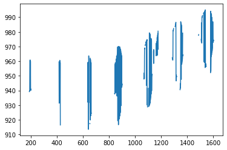
In [225]: colnan = np.where(np.abs(col-filt.gaussian_filter1d(col, 5))<3, col, np.nan)
In [226]: plt.plot(colnan)
Out[226]: [<matplotlib.lines.Line2D at 0x7f5723ba56d0>]
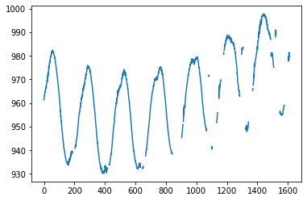
In [227]: plt.imshow(test); plt.plot(filt.gaussian_filter1d(colnan, 5)-800, filt.gaussian_filter1d(row, 5), color=[1,1,1]); plt.ylim((0, 400)); plt.gca().invert_yaxis()
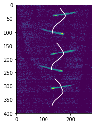
In [228]: plt.imshow(test); plt.plot(filt.gaussian_filter1d(colnan, 1)-800, filt.gaussian_filter1d(row, 1), color=[1,1,1]); plt.ylim((0, 400)); plt.gca().invert_yaxis()
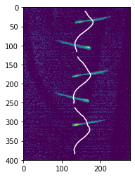
In [229]: plt.imshow(test, cmap='gray'); plt.plot(filt.gaussian_filter1d(colnan, 1)-800, filt.gaussian_filter1d(row, 1), color=[1,1,1]); plt.ylim((0, 400)); plt.gca().invert_yaxis()
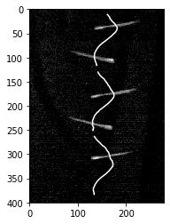
In [230]: plt.imshow(test, cmap='gray'); plt.plot(filt.gaussian_filter1d(colnan, 1)-800, filt.gaussian_filter1d(row, 1), color=[0,1,1]); plt.ylim((0, 400)); plt.gca().invert_yaxis()
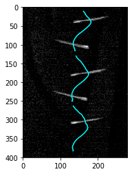
In [231]: plt.figure(figsize=(20,20)); plt.imshow(test, cmap='gray'); plt.plot(filt.gaussian_filter1d(colnan, 1)-800, filt.gaussian_filter1d(row, 1), color=[0,1,1]); plt.ylim((0, 400)); plt.gca().invert_yaxis()
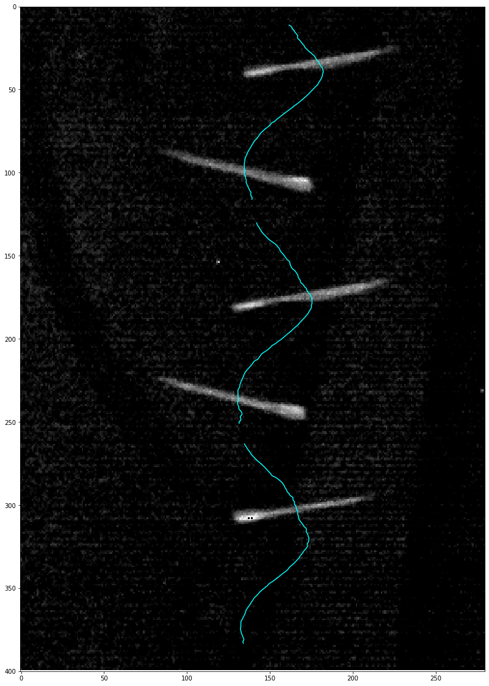
In [232]: plt.plot(colnan, row); plt.gca().invert_yaxis(); plt.gca().set_aspect('equal')
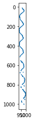
In [233]: plt.figure(figsize=(10, 10)); plt.plot(colnan, row); plt.gca().invert_yaxis(); plt.gca().set_aspect('equal')
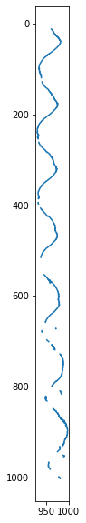
In [234]: plt.figure(figsize=(8,8)); plt.imshow(test, cmap='gray'); plt.plot(filt.gaussian_filter1d(colnan, 1)-800, filt.gaussian_filter1d(row, 1), color=[0,1,1]); plt.ylim((0, 400)); plt.gca().invert_yaxis()
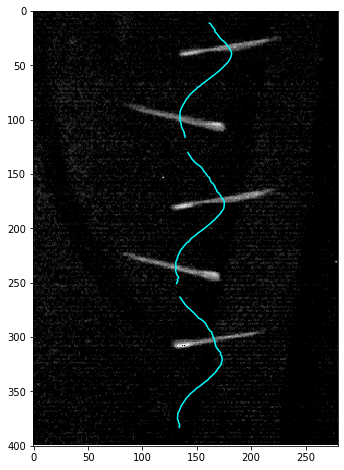
In [235]: plt.figure(figsize=(8,8)); plt.imshow(test, cmap='gray'); plt.plot(filt.gaussian_filter1d(colnan, 1)-800, filt.gaussian_filter1d(row, 1), color=[0,1,1]); plt.ylim((0, 400)); plt.gca().invert_yaxis(); plt.axis('off')
Out[235]: (-0.5, 279.5, 400.0, 0.0)
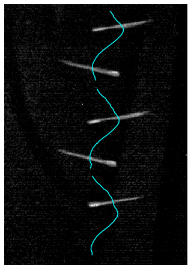
In [236]: plt.figure(figsize=(8,8)); plt.imshow(test, cmap='gray'); plt.plot(filt.gaussian_filter1d(colnan, 1)-800, filt.gaussian_filter1d(row, 1), color=[0,1,1]); plt.ylim((0, 400)); plt.gca().invert_yaxis(); plt.axis('off'); plt.savefig('../../